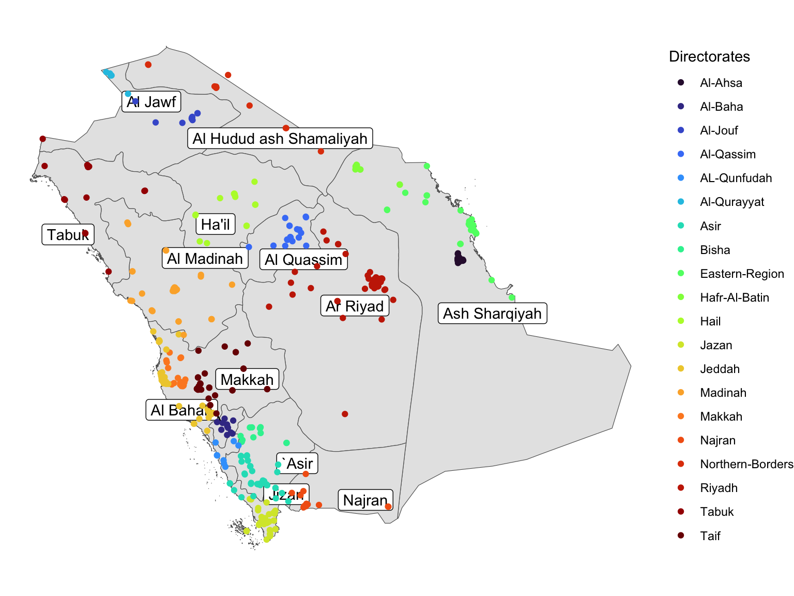

flowchart LR
A[Comparison] --> B[Within population]
B --> C[Over time] --> I[Against standard or target]
C --> J[Slope / regression coefficient]
B --> K[Within subgroups e.g. age, sex, SES]
A --> D[Between populations]
D --> E[Cross-sectional variation]
D --> F[Compare summary trends]
D --> G[Compare trend in variation]
classDef green fill:#9f6,stroke:#333,stroke-width:2px;
classDef orange fill:#f96,stroke:#333,stroke-width:4px;
class D,e green
class B orange
3 Data preparation and cleaning
3.1 Data prep and clening
3.1.1 Creating a lookup table for KSA regions and health directorates
Population estimates by age, gender and region - downloaded from detailed census data 2022. source: https://portal.saudicensus.sa/portal/public/1/15/101464?type=TABLE; translated into English using ChatGPT4o.
This gives populations for 13 regions; smoking and injury date is based on health directorates - 20 units.
For these analyses aggregated directorates to regions to enable rate calculations
To map directorates to regions following steps were undertaken:
Shape file for KSA regional boundaries obtained from …
Directorate based locations of smoking cessation clinics were scraped from https://www.moh.gov.sa/en/Ministry/Projects/TCP/Pages/default.aspx
Locations were spatially joined to KSA regional boundaries to create a region <-> directorate lookup
Naming systems differed between datasets so renaming and recoding necessary
3.1.2 Region names
Code
devtools::install_github("yutannihilation/ggsflabel")
needs(tidyverse, data.table, readxl, myScrapers, sf, curl, ggsflabel)
pops <- fread("/Users/julianflowers/Library/CloudStorage/GoogleDrive-julian.flowers12@gmail.com/My Drive/Saudi/data/pop_ests.csv")
region_names <- pops$Region |> unique()
region_names |>
enframe()# A tibble: 13 × 2
name value
<int> <chr>
1 1 Al Bahah
2 2 Al Jawf
3 3 Al Hudud ash Shamaliyah
4 4 Ar Riyadh
5 5 Al Qasim
6 6 Al Madinah al Munawwarah
7 7 Al Mintaqah ash Sharqiyah
8 8 Tabuk
9 9 Jazan
10 10 Ha'il
11 11 'Asir
12 12 Makkah al Mukarramah
13 13 Najran Code
## region names for injury data (NB only 12 names)
df_r <- read_xlsx("/Users/julianflowers/spha/data/fwdatastrategypocpublichealthframeworkindicators/Nonfatal Hospitalizations for Injuries data 2023 (8-7-2024).xlsx") |> pluck("Region") |> unique()
## directorate names for smoking data
smok <- read_csv("/Users/julianflowers/spha/data/fwdatastrategypocpublichealthframeworkindicators/Smoking 2022.csv") 3.1.3 Scrape smoking clinic locations
Code
url <- "https://www.moh.gov.sa/en/Ministry/Projects/TCP/Pages/default.aspx"
scc_dir <- get_page_links(url) %>%
.[159:178]
sc_dir_links <- paste0("https://www.moh.gov.sa", scc_dir)
sc_dir_names <- sc_dir_links |>
basename()
## extract Google maps link of scc for each region and create data frame
sc_loc <- map(sc_dir_links, get_page_links) %>%
map(\(x) x[grepl("https://goo.gl", x)]) %>%
set_names(., sc_dir_names) |>
enframe() |>
mutate(name = str_remove(name, ".aspx"))3.1.4 Function to extract coordinates from google map links
Code
get_coordinates_from_google_maps <- function(url) {
# Follow the redirect to get the final URL
url <- url
response <- HEAD(url, config(followlocation = TRUE))
final_url <- response$url
# Use a regular expression to find the coordinates in the final URL
match <- str_match(final_url, "@(-?\\d+\\.\\d+),(-?\\d+\\.\\d+)")
if (!is.na(match[1,2]) && !is.na(match[1,3])) {
latitude <- as.numeric(match[1,2])
longitude <- as.numeric(match[1,3])
return(list(latitude = latitude, longitude = longitude))
} else {
return(NULL)
}
}3.1.5 Extract smoking clinic coordinates
Code
sc_coords <- sc_loc |>
unnest(value) |>
mutate(ll = map(value, get_coordinates_from_google_maps, .progress = TRUE))
## create table of sc clinic locations
sc_ll <- sc_coords |>
unnest_wider(ll)
## convert to sf file (need to remove missing coordinate values)
sc_ll_sf <- sc_ll |>
drop_na() |>
st_as_sf(coords = c("longitude", "latitude"), crs = 4326)3.1.6 Obtain KSA region boundary file
Code
sa_shp <- curl_download("https://data.humdata.org/dataset/41ce9023-1d21-4549-a485-94316200aba0/resource/a0188b1b-2f40-4f27-8a43-25913a7378ca/download/sau_adm_gadm_20210525_shp.zip", destfile = tempfile())
tmpd <- tempdir()
sa_shp_1 <- curl_download("https://data.humdata.org/dataset/41ce9023-1d21-4549-a485-94316200aba0/resource/99834c81-ad34-415e-91c5-af053d8e55b4/download/sau_capp_adm1_1m_ocha.zip", destfile = tempfile())
#sa_pop_d <- curl_download("https://data.humdata.org/dataset/14b288ca-1855-4025-9f01-41cba548e6f6/resource/44baa2f6-b6d8-4018-b9c6-fd81b493ec22/download/sau_general_2020_geotiff.zip", destfile = tempfile())
sa_shp <- unzip(sa_shp, exdir = tmpd)
sa_shp_1 <- unzip(sa_shp_1, exdir = tmpd)
#sa_tif <- unzip(sa_pop_d, exdir = tmpd)
shps <- fs::dir_ls(tmpd, regexp = "shp$")
## boundary polygon file
sa_bound <- read_sf(shps[2]) 3.1.7 Map smoking clinic locations against regional boundaries
Code
sa_bound |>
ggplot() +
geom_sf(fill = "grey90") +
geom_sf_label_repel(aes(label = ADM1_EN)) +
geom_sf(data = sc_ll_sf, aes(colour = name)) +
theme_void() +
scale_colour_viridis_d(option = "turbo", name = "Directorates")

3.1.8 Create a geographical lookup table
Code
reg_dir_lu <- sa_bound |>
st_join(sc_ll_sf) |>
st_drop_geometry() |>
select(ADM1_EN, name) |>
group_by(ADM1_EN, name) |>
summarise(n = n()) |>
ungroup() |>
group_by(name) |>
arrange(name) |>
filter(n == max(n)) |>
select(name, everything())Now we want to attach region names tpo the smoking data so we can join with population data in order to calculate attendance rates by age.
3.1.9 Map directorates to regions
Code
pops$Region |>
unique() |>
enframe() # A tibble: 13 × 2
name value
<int> <chr>
1 1 Al Bahah
2 2 Al Jawf
3 3 Al Hudud ash Shamaliyah
4 4 Ar Riyadh
5 5 Al Qasim
6 6 Al Madinah al Munawwarah
7 7 Al Mintaqah ash Sharqiyah
8 8 Tabuk
9 9 Jazan
10 10 Ha'il
11 11 'Asir
12 12 Makkah al Mukarramah
13 13 Najran Code
smok_1 <- smok |>
mutate(directorate_name = recode(directorate_name, "Qurayyat" = "Al-Qurayyat",
"Qunfotha" = "AL-Qunfudah",
"AlAhsa" = "Al-Ahsa",
"Baha" = "Al-Baha",
"Eastern" = "Eastern-Region",
"Hafer AlBatin" = "Hafr-Al-Batin",
"Northern Borders" = "Northern-Borders",
"Qassim" = "Al-Qassim",
"Jouf" = "Al-Jouf"
)) |>
left_join(reg_dir_lu, by = c("directorate_name" = "name"))
#left_join(pops, by = c("ADM1_EN" = "Region"))3.1.10 Link smoking frequencies to population data
Code
pops <- pops |>
mutate(age = parse_number(`Single Age Group`))
pops$Region |>
unique() [1] "Al Bahah" "Al Jawf"
[3] "Al Hudud ash Shamaliyah" "Ar Riyadh"
[5] "Al Qasim" "Al Madinah al Munawwarah"
[7] "Al Mintaqah ash Sharqiyah" "Tabuk"
[9] "Jazan" "Ha'il"
[11] "'Asir" "Makkah al Mukarramah"
[13] "Najran" Code
smok_pops_region <- smok_1 |>
mutate(Gender = str_to_title(patient_gender)) |>
count(ADM1_EN, age, Gender)
## recode region names (ADM1_EN)
# smok_pops_region |>
# mutate(Region = recode(ADM1_EN,
# "`Asir" = "'Asir",
# "Ash Sharqiyah" = "Al Hudud ash Sharqiyah",
# "Al Madinah" = ))
smok_pops_region <- smok_pops_region |>
full_join(pops, by = c("ADM1_EN" = "Region", "age", "Gender"))
## sense check
smok_pops_region |>
count(Gender, ADM1_EN, `18-44`) |>
print(n = 42)# A tibble: 69 × 4
Gender ADM1_EN `18-44` n
<chr> <chr> <chr> <int>
1 Female 'Asir 18-44 967
2 Female 'Asir other 2206
3 Female Al Bahah 18-44 535
4 Female Al Bahah other 1178
5 Female Al Hudud ash Shamaliyah 18-44 216
6 Female Al Hudud ash Shamaliyah other 522
7 Female Al Jawf 18-44 216
8 Female Al Jawf other 522
9 Female Al Madinah <NA> 17
10 Female Al Madinah al Munawwarah 18-44 484
11 Female Al Madinah al Munawwarah other 1133
12 Female Al Mintaqah ash Sharqiyah 18-44 648
13 Female Al Mintaqah ash Sharqiyah other 1568
14 Female Al Qasim 18-44 699
15 Female Al Qasim other 1592
16 Female Al Quassim <NA> 4
17 Female Ar Riyad <NA> 21
18 Female Ar Riyadh 18-44 1241
19 Female Ar Riyadh other 2866
20 Female Ash Sharqiyah <NA> 19
21 Female Ha'il 18-44 482
22 Female Ha'il other 1045
23 Female Jazan 18-44 913
24 Female Jazan other 2270
25 Female Jizan <NA> 5
26 Female Makkah <NA> 23
27 Female Makkah al Mukarramah 18-44 917
28 Female Makkah al Mukarramah other 2224
29 Female Najran 18-44 372
30 Female Najran other 821
31 Female Tabuk 18-44 376
32 Female Tabuk other 876
33 Female `Asir <NA> 14
34 Male 'Asir 18-44 967
35 Male 'Asir other 2293
36 Male Al Bahah 18-44 539
37 Male Al Bahah other 1228
38 Male Al Hudud ash Shamaliyah 18-44 216
39 Male Al Hudud ash Shamaliyah other 520
40 Male Al Jawf 18-44 216
41 Male Al Jawf other 531
42 Male Al Jawf <NA> 1
# ℹ 27 more rows3.1.11 Calculate regional smoking rates
Code
## 18-44 F
smok_18_44 <- smok_pops_region |>
filter(Gender == "Female", `18-44` == "18-44") |>
group_by(ADM1_EN) |>
reframe(n = n(),
sum_pop = sum(Population),
rate_100k = 100000 * n / sum_pop)
smok_18_44_ci <- PHEindicatormethods::phe_rate(smok_18_44, n, sum_pop, multiplier = 100000)
smok_18_44_ci |>
ggplot() +
geom_col(aes(reorder(ADM1_EN, -rate_100k), rate_100k), fill = "goldenrod") +
geom_point(aes(reorder(ADM1_EN, -rate_100k), rate_100k, colour = n)) +
geom_linerange(aes(x = ADM1_EN, ymin = lowercl, ymax = uppercl)) +
labs(y = "",
x = "Region
") +
theme(axis.text.x = element_text(angle = 45, hjust = 1))
Code
## 15+
smok_15_ <- smok_pops_region |>
filter(`15+` == "15+") |>
group_by(ADM1_EN) |>
reframe(n = n(),
sum_pop = sum(Population),
rate_100k = 100000 * n / sum_pop)
smok_15_ci <- PHEindicatormethods::phe_rate(smok_15_, n, sum_pop, multiplier = 100000)
smok_15_ci |>
ggplot() +
geom_point(aes(reorder(ADM1_EN, rate_100k), rate_100k)) +
geom_linerange(aes(x = ADM1_EN, ymin = lowercl, ymax = uppercl)) +
coord_flip() +
labs(x = "")
Code
## AS specific
smok_pops_region |>
#filter(`15+` == "15+") |>
group_by(ADM1_EN, `Five-Year Age Group`, Gender) |>
reframe(n = n(),
sum_pop = sum(Population),
rate_100k = 100 * n / sum_pop) |>
# select(-c(n, sum_pop)) |>
pivot_wider(-c(n, rate_100k), names_from = c("Gender", "Five-Year Age Group"), values_from = "sum_pop") # A tibble: 20 × 38
ADM1_EN `Female_0-4` `Male_0-4` `Female_10-14` `Male_10-14` `Female_15-19`
<chr> <int> <int> <int> <int> <int>
1 'Asir 86076 89700 89842 92719 80089
2 Al Bahah 13905 14292 15738 16437 13866
3 Al Hudud … 20196 21493 17737 18266 14648
4 Al Jawf 35470 36359 29566 30401 23021
5 Al Madinah NA NA NA NA NA
6 Al Madina… 92536 95669 91346 94512 78252
7 Al Mintaq… 200425 208376 184743 191018 149977
8 Al Qasim 54714 56834 57093 58495 50842
9 Al Quassim NA NA NA NA NA
10 Ar Riyad NA NA NA NA NA
11 Ar Riyadh 307991 320698 298933 309250 254888
12 Ash Sharq… NA NA NA NA NA
13 Ha'il 32737 33782 32674 33511 27449
14 Jazan 64626 67613 64993 68873 59475
15 Jizan NA NA NA NA NA
16 Makkah NA NA NA NA NA
17 Makkah al… 281082 292376 299840 314392 270382
18 Najran 31863 33038 27125 28865 22482
19 Tabuk 42296 44012 39399 40646 34513
20 `Asir NA NA NA NA NA
# ℹ 32 more variables: `Male_15-19` <int>, `Female_20-24` <int>,
# `Male_20-24` <int>, `Female_25-29` <int>, `Male_25-29` <int>,
# `Female_30-34` <int>, `Male_30-34` <int>, `Female_35-39` <int>,
# `Male_35-39` <int>, `Female_40-44` <int>, `Male_40-44` <int>,
# `Female_45-49` <int>, `Male_45-49` <int>, `Female_5-9` <int>,
# `Male_5-9` <int>, `Female_50-54` <int>, `Male_50-54` <int>,
# `Female_55-59` <int>, `Male_55-59` <int>, `Female_60-64` <int>, …